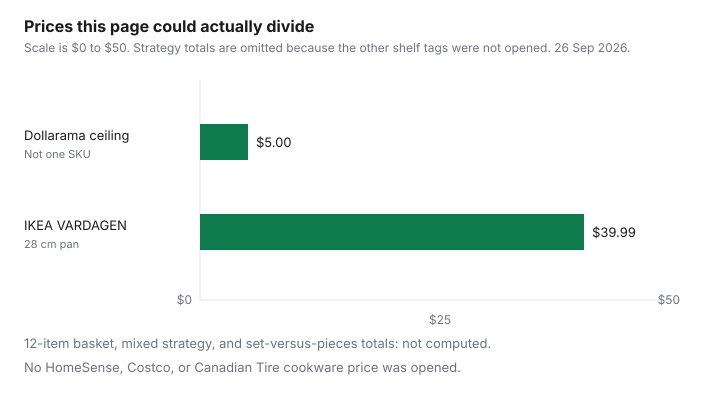

Household Items and Supplies · Canada
Stock a Kitchen on a Budget in Canada: Cookware, Knives, and Utensils—Dollarama vs HomeSense vs Costco
A starter kitchen is twelve jobs, not a cart total. This page prices only what a page actually printed on 26 September 2026: Dollarama’s Canadian price-point ceiling, and one IKEA cast-iron pan. HomeSense, Costco, and Canadian Tire cookware tags were not opened, so they are blank cells, not guesses. A set-versus-pieces winner needs both prices. They were not on a page opened here.
Unit price, when you do have a count, is the dollar-store guide. Origin and tariff item, when the box says United States, is the counter-tariff guide. This page is the shopping list and the blanks. It is education, not a cart to copy.
Key takeaways
- Dollarama’s annual information form dated 14 Apr 2026, information as at 1 Feb 2026, says Canadian prices range from $0.25 to up to $5.00. General merchandise, about 38 percent of fiscal 2026 Canadian-segment sales, includes kitchenware. That is a ceiling, not a 12-item total.
- IKEA’s VARDAGEN frying pan, cast iron, 28 cm, article 305.802.05, was $39.99 on the product page opened 26 Sep 2026. The page states a 15-year limited warranty, a return within 365 days, and that the pan is oven-safe and compatible with all cooktops.
- No HomeSense, Costco, or Canadian Tire cookware price was opened. No set price was opened beside the sum of the same pieces. Those cells stay blank.
- This draft did not re-open Finance Canada’s counter-tariff list, so it does not reprint a cookware rate. Check the origin mark, then the list. The tariff guide holds the items that guide read.
- Used cast iron and bakeware can be the cheaper pan if you can see the surface. The used-goods guide is the recall and pest check. A price you did not see is not a bargain.
The 12-item starter kitchen most households actually use
Nobody published a count of what “most households” cook with, and this page will not invent one. The twelve lines below are jobs a small kitchen fails without: a chef’s knife, a paring knife, a cutting board, a frying pan, a saucepan with a lid, a sheet pan, a mixing bowl, a turner, a wooden or heat-safe spoon, a can opener, a kettle or a second pot, and a set of measuring cups. If you do not bake, the cups can wait. If you do not own a stove, the pans can wait. The list is a filter so you do not buy a twelve-piece set to get a spoon.
Write the twelve jobs on paper before you shop. Cross off what you already own, including the pan in the back of the cupboard. A budget that starts from zero when you already own eight of the jobs is how a “starter” kit becomes clutter. The furniture total-cost guide uses the same habit for a table: price what is missing, not the showroom scene.
Where to buy each item in Canada: Dollarama ($5 max), IKEA, HomeSense, Costco, Canadian Tire
Dollarama’s annual information form for the year ended 1 February 2026, dated 14 April 2026, says prices for the Canadian segment range from $0.25 to up to $5.00. Private-label products were 65 percent of fiscal 2026 Canadian-segment sales and national brands 35 percent. General merchandise was about 38 percent of those sales and includes household wares and kitchenware. The corporation operated 1,691 Canadian stores as at 1 February 2026. Canadian-segment sales were $6.8 billion. Consolidated sales were $7.3 billion. Do not import the Australian figures in the same filing. A $5 ceiling means a utensil, a measuring cup, or a small tool can sit in that aisle. It does not mean a cast-iron pan is $5, and it does not mean every kitchenware SKU is good. The comparison guide is where a $5 bottle still loses on unit price.
IKEA is the one cookware price this draft opened. The VARDAGEN frying pan, cast iron, black, 28 cm, article 305.802.05, was $39.99. The page says it is pre-treated with vegetable soybean oil, hand-wash only, suitable for gas, induction, ceramic, and electric cooktops, and oven-safe. Seasoning instructions on the page say to rub with oil and heat to a maximum of 300 °F for at least an hour. The return line says you can return within 365 days for a full refund. That 365-day line is this pan’s product page. It is not a rule for IKEA As-Is or for bedding. The sell-back guide is the furniture credit, which is store credit and a different clock.
HomeSense, Costco, and Canadian Tire did not return a cookware tag this draft could date. Costco membership math stays on the food guides. If you are in a warehouse, divide the set price by the pieces you will use before you treat the tag as a per-pan win. If the tag is a grouped flyer line, it is not a price for one pan.
Sets vs individual pieces: the real math (table)
The math is short. Set price, minus the pieces you will not use, compared with the sum of the pieces you would buy alone. A set wins only when that remainder is lower and the pieces match the jobs above. This draft did not open a set price and the matching piece prices on the same day, so it does not declare a winner. Filling the cell with a remembered Boxing Day set would be a fiction.
| Job | Dollarama | IKEA | HomeSense | Costco | Canadian Tire |
|---|---|---|---|---|---|
| Frying pan | Ceiling $5.00. No pan SKU opened. | VARDAGEN 28 cm cast iron, $39.99. | Not opened. | Not opened. | Not opened. |
| Saucepan, sheet pan, knives, board, utensils, kettle, measures | Ceiling $5.00 per price point. No SKU opened. | Not opened, except the pan above. | Not opened. | Not opened. | Not opened. |
| Set versus the same pieces | Not computed. A set price and the sum of the same pieces were not on a page opened 26 Sep 2026. | ||||

Quality signals for cast iron, stainless steel, and knives
Cast iron announces itself on the material line. The VARDAGEN page says cast iron and oil, thick walls, two handles, and a warning that the pan gets hot and should not go from a cold shock onto a hot element. Those sentences are care, not a lab score. A pan that is already seasoned in a thrift shop can be the same material. Rust you can scour and re-season is the page’s own recovery step. A crack is not. Stainless is a different metal: look for the word stainless on the spec, and for a base that is not a thin disc glued to a pretty wall. This draft did not open a stainless SKU with a price, so it does not name a grade as “the” budget pick.
Knives are the place a cheap set hides its cost. A blade without a steel name, a handle that wobbles, and a block of six when you need two are the signals you can see without a tester. No Canadian knife price was opened on 26 September 2026, so this guide does not print one and does not rank brands. Buy the two knives on the job list, then stop. A sharpener you will use beats a third blade you will not.
2026 counter-tariffs on some U.S.-origin cookware: check origin on the box
On 8 September 2026 Canada applied counter-tariffs to a defined list of U.S.-origin goods. Some household rows are cookware. A department name is not a rate, and a store’s nationality is not the origin of the pan. The mark that matters is the country of origin on the box or the product, then the tariff item if you are checking whether that good is on the list. This draft did not re-open the Finance Canada list, so it does not reprint a percent or a tariff item. The tariff guide is the place those rows were read on 26 September 2026, with the caution that the Customs Tariff schedule is the legal text.
If the box does not say where the pan was made, do not guess from the brand story. Ask, or leave it. A pan already on a Canadian shelf was not automatically re-priced on 8 September. The tariff guide’s point is the same: do not rush a purchase because a headline named cookware.
Buying used: Marketplace, thrift, and estate sales for cast iron and bakeware
Cast iron and a plain sheet pan are the used buys that survive a visual check. Look for a crack, a warp, and a coating that is flaking into food. Seasoning you can redo is not a defect. A non-stick surface that is scratched through is a different product, and this page did not open a health ruling on scratched non-stick, so it will not invent one. Leave a pan you cannot see in daylight. Estate-sale and Marketplace prices were not sampled, so there is no “typical” used-pan dollar here.
The used-goods guide covers the scams and the items Health Canada tells you not to take secondhand. A free pan from a Buy Nothing porch is still a pan you inspect. A ReStore pan is the thrift guide, and that page does not invent a price range either. If the piece needs a car you do not have, the free pan is not free.
Sources & date stamps
- Dollarama Inc. annual information form for the fiscal year ended 1 Feb 2026, dated 14 Apr 2026. Canadian prices from $0.25 to up to $5.00. Private label 65 percent and national brands 35 percent of fiscal 2026 Canadian-segment sales. General merchandise about 38 percent, including kitchenware. 1,691 Canadian stores and Canadian-segment sales of $6.8 billion as at 1 Feb 2026. Opened 26 Sep 2026.
- IKEA Canada, VARDAGEN frying pan, cast iron, 28 cm, article 305.802.05, product page opened 26 Sep 2026. Price $39.99. 15-year limited warranty. Return within 365 days. Oven-safe. All cooktops named on the page. Hand-wash. Seasoning to a maximum of 300 °F.
- Finance Canada’s counter-tariff list was not re-opened for this page. Rates are not reprinted. See the household tariff guide for the items that guide read on 26 Sep 2026.
- No HomeSense, Costco, or Canadian Tire cookware price, and no set-versus-pieces pair, was opened.
Frequently asked questions
What does a basic kitchen really need?
A working list is the jobs you cook, not a survey of Canadian households. This guide uses twelve jobs: a chef knife, a paring knife, a board, a frying pan, a saucepan, a sheet pan, a bowl, a turner, a spoon, a can opener, a kettle or extra pot, and measuring cups. No 12-item basket total was priced, because HomeSense, Costco, and Canadian Tire cookware tags were not opened on 26 September 2026.
Is a cookware set cheaper than buying pieces?
Only after you add the set price and subtract the pieces you will not use. This draft did not open a matched set price and a sum of the same pieces, so the table does not print a winner. The one verified pan is IKEA's VARDAGEN 28 cm cast iron at $39.99 on the product page opened that day. A set that hides a pan you already own is not a saving.
What is worth buying at Dollarama for the kitchen?
Dollarama's annual information form dated 14 April 2026 says Canadian prices range from $0.25 to up to $5.00, and that general merchandise includes kitchenware. That ceiling can fit a spoon, a turner, or a measuring cup, and it is not a quality grade or a promise that a lasting pan costs $5. A $5 item can still lose on unit price to a larger jug, which is the test in the dollar-store guide.
How do I spot good cast iron or knives on a budget?
Read the material line and the care line on the page you are buying from. The VARDAGEN page says cast iron and oil, hand-wash only, oven-safe, all cooktops, and a 15-year limited warranty, with seasoning instructions on the same page. A knife without a steel name is not a test result. This draft did not open a Canadian knife listing with a verified price, so it does not rank blades.
Are counter-tariffs raising cookware prices?
Some United States-origin goods are on Canada's 8 September 2026 counter-tariff list, and this page did not re-open the Finance Canada list, so it does not reprint a cookware rate. Check the origin mark on the box, then the tariff item on the list. The household tariff guide is where the items that guide read are dated, and a store logo is not an origin.